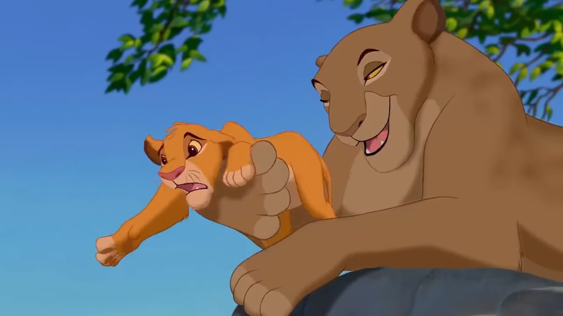
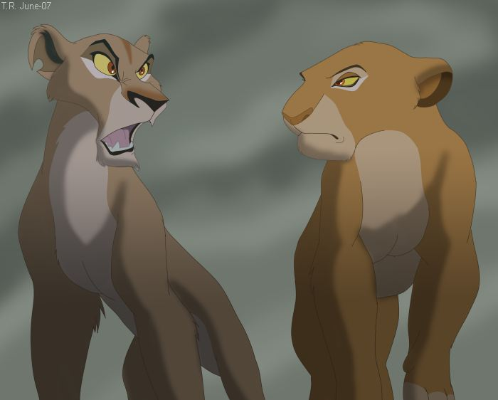

|
|
Сараби
Навигация
Сараби — настоящая королева: мудрая, уравновешенная, гордая. При этом она не лишена чувства юмора и с улыбкой наблюдает за проказами сына и его подруги. Материнская нежность в ней сочетается с твёрдостью духа. Когда Муфаса погиб и Шрам решает стать королём, Сараби становится серьёзнее и сдержаннее.

Во время правления Муфасы Сараби яростно поддерживает свою семью. Львица относится к сыну мягче, чем её муж, но также наставляет его на путь короля. Сараби не только нежная и ласковая, но и любящая мать. Королева не боится поддразнивать сына и с улыбкой смотрит на его проказы. Несмотря на шутливый характер, Сараби достаточно мудра, чтобы оберегать её семью. Её спокойный подход к воспитанию достаточно строгий, чтобы держать своего сына на правильном пути.
Когда погибает Муфаса и «умирает» Симба, Сараби доказывает свой характер, переживая горе в себе и сохраняет твёрдое и волевое лицо. Когда к правлению приходит Шрам, Сараби держит свою голову высоко поднятой и остаётся справедливой, не смотря на все обвинения нового короля. Хоть она и держит себя спокойно, в конце-концов львица срывается и показывает свою дерзость.


Семья
Характеристика
| Имя | Сараби |
| Животное | лев |
| Пол | мужской |
| Грива | нет |
| Тип персонажа | положительный |
| Характер | Сильная, мудрая, храбрая, добрая, заботливая, любящая |
| Внешний вид | Большая стройная львица, кремово-жёлтый мех, бежевые подбрюшье и лапы, розово-бурый нос, рубиново-карие глаза |
| Цель | Оберегать и поддерживать семью |
| Силы и способности | Физическая сила |
| Оружие | Клыки и когти |
| Судьба | Воссоединяется с возвратившимся домой сыном Симбой и встречает его как нового короля |
Видео
| Симба | Муфаса | Сараби | Шрам |
|
|
|||
| Все используемые материалы взяты с Википедии | Kiber One, 2019 | ||